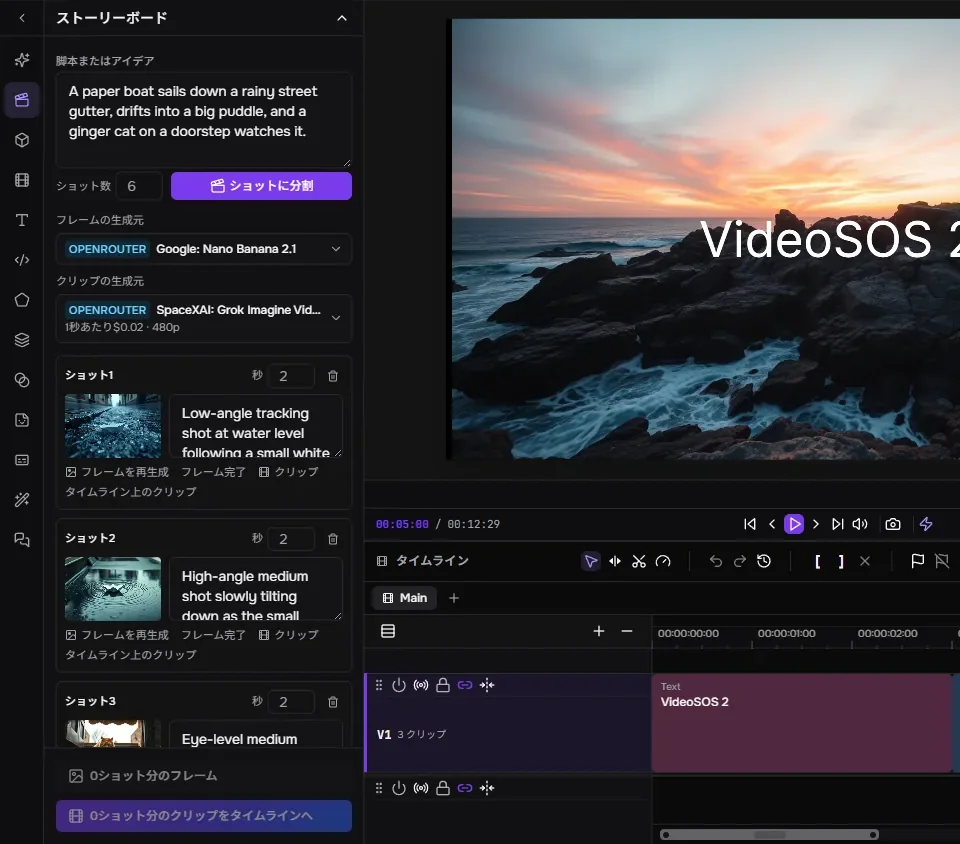
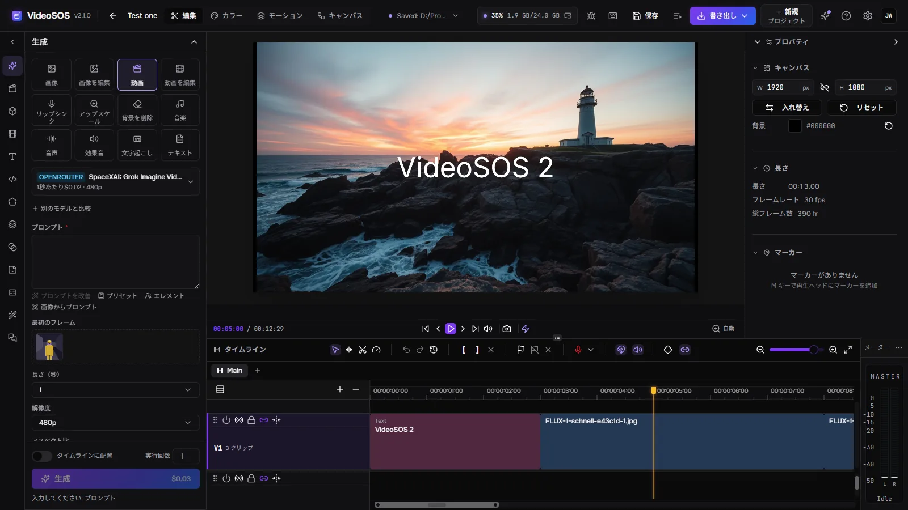
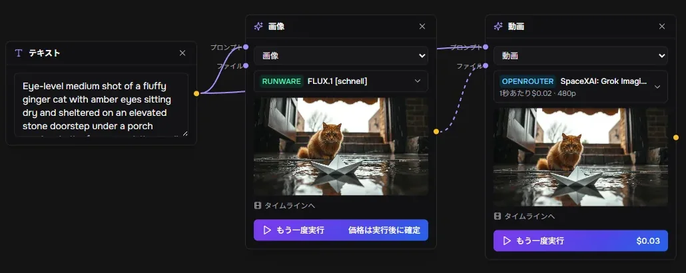
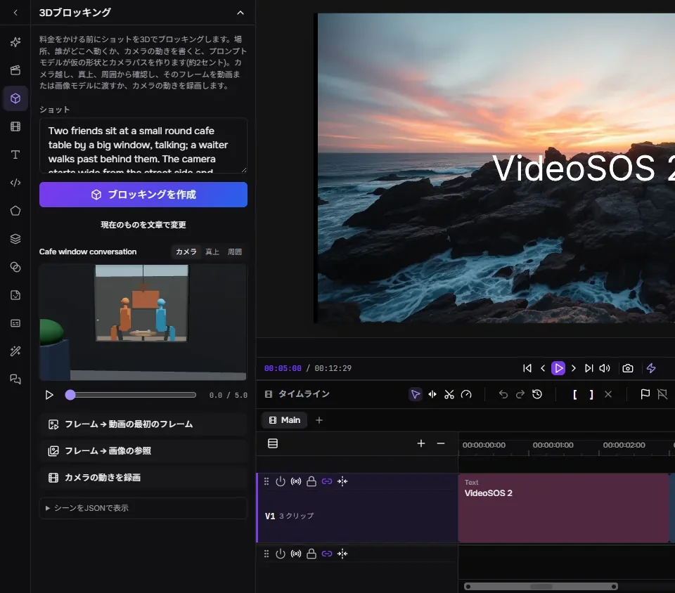
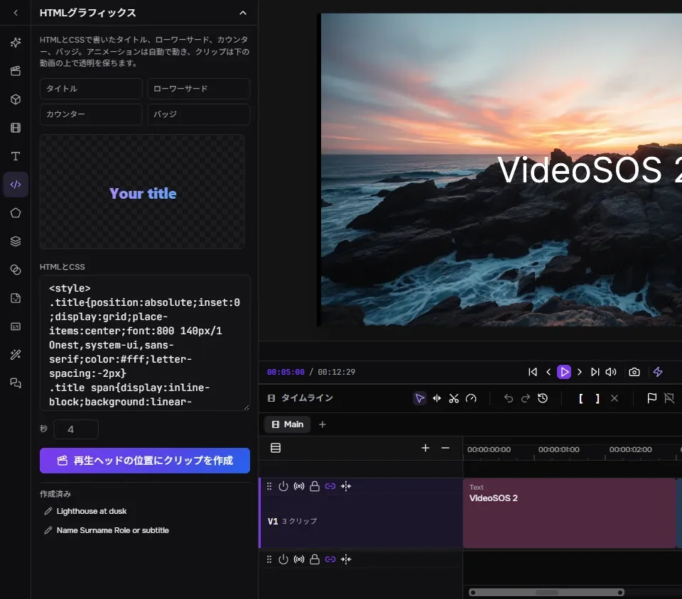
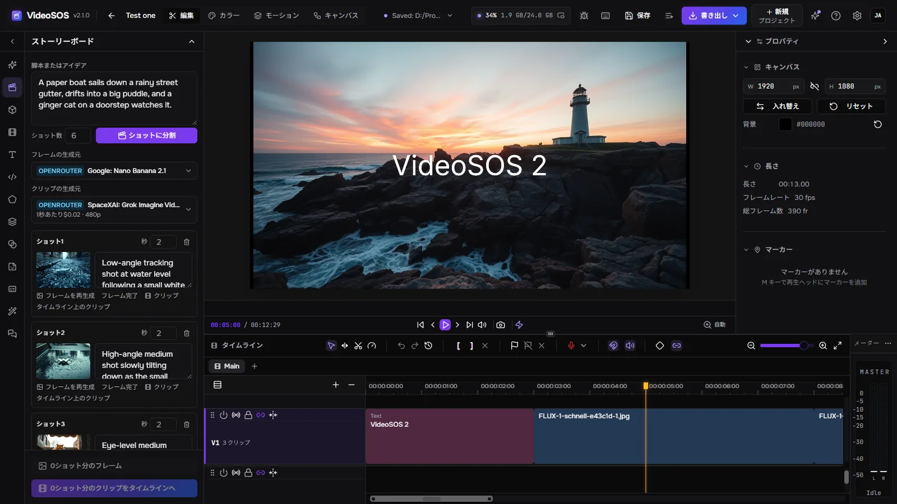
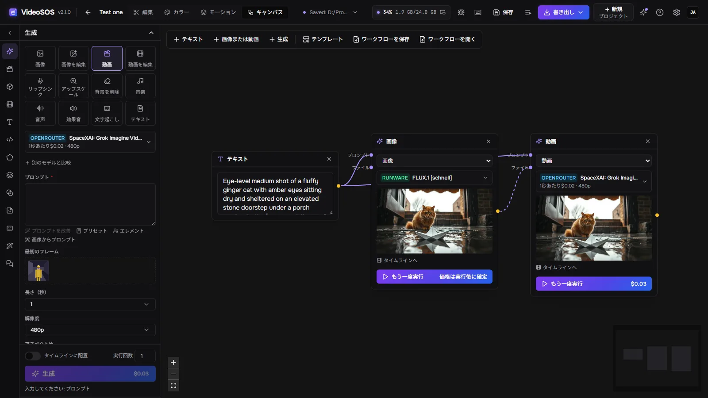
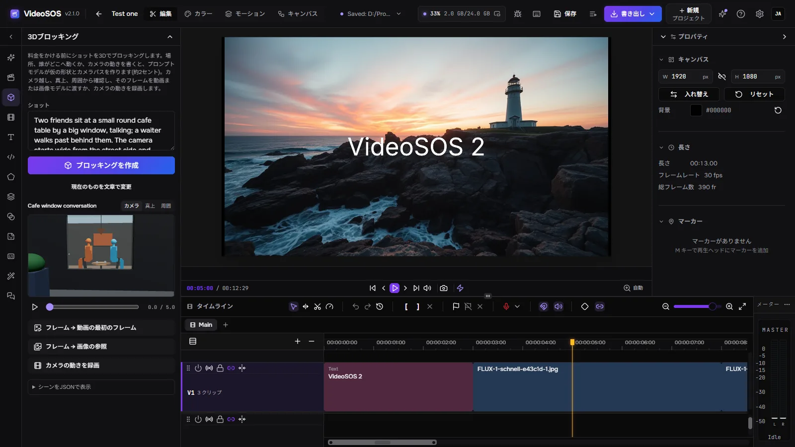
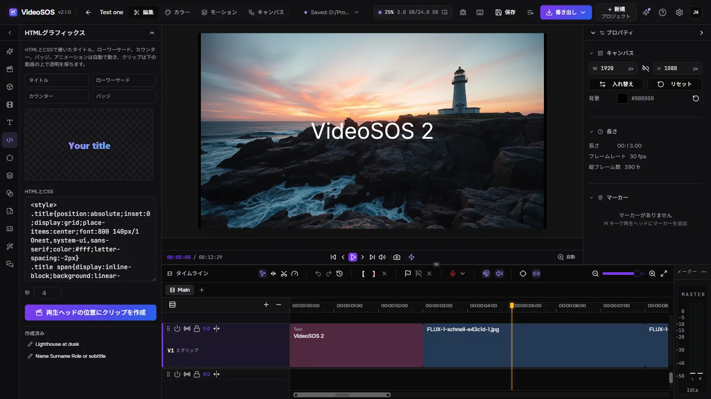

ストーリーボード

言語モデルが脚本をショットに分割します。
VideoSOS は、OpenRouter、fal、Runware の最高の画像・動画・音楽・音声モデルを、本格的なマルチトラックエディターのすぐ隣に並べます。ストーリーボード、ノードキャンバス、3D ブロッキングで作品を設計し、実行前に表示される料金で、自分のキーを使ってすべてのショットを生成し、完成した動画に編集します。AI エージェントと一緒に進めることもできます。
Windows 10/11、Linux（試験的）、Apple Silicon の macOS（試験的）に対応。プレビューと書き出しには WebGPU 対応のグラフィックスカードが必要です。生成には OpenRouter、fal、Runware のいずれかのキーが必要で、料金は各社に直接お支払いいただきます。画像と音声付き動画は、自分のグラフィックカードで無料で作ることもできます（Windows）。

生成、設計、編集を一つのプログラムで。ファイルはあなたのディスクに置かれます。

言語モデルが脚本をショットに分割します。

テキスト、画像、動画、生成はノードで、受け渡す内容でつながります。

ショットを説明すると、言語モデルが仮の形状、立っている人物や座っている人物、その動き、カメラの軌道で組み立てます。

HTML と CSS でタイトル、ローワーサード、カウンター、バッジを作成し、ライブでプレビュー。
12 種類のタスク：画像、編集、テキストまたはフレームからの動画、動画編集、リップシンク、アップスケール、背景除去、音楽、音声、効果音、文字起こし、テキスト。OpenRouter、fal、Runware の 1,000 を超えるモデルを、各プロバイダーからリアルタイムに読み込みます。
フォームはモデル自身の説明から作られ、「生成」を押す前に料金が計算されます。実行後はプロバイダー自身の請求額が記録されます。1 日の上限がエージェントの使いすぎを抑えます。
同じプロンプトを最大 2 つの別のモデルにも送り、結果を料金と並べて表示します。
キャラクター、オブジェクト、場所を画像と一緒に名前で保存します。プロンプトに @名前 と書くとモデルに送られ、ショットが変わっても同じ顔が戻ってきます。
実行中の処理は、結果が置かれるタイムライン上の位置に表示されます。クリップの一部をその場で再生成でき、次のクリップは前のクリップの最後のフレームから続きます。
複数のビデオ／オーディオトラック、リップル、ローリング、スリップ、スライドトリム、トランジション、ベジェグラフ付きキーフレーム、マスク、ブレンドモード、スコープ付きカラーグレーディング、テキスト、シェイプ、字幕。グラフィックスカードによる高速書き出しは MP4、WebM、MOV、MKV に対応し、Final Cut、DaVinci Resolve、Premiere 向けには FCPXML も使えます。
Claude Code、Claude Desktop、Cursor、Codex を接続すると、エージェントがウィンドウと同じことをします。モデル選び、料金の見積もり、生成、タイムラインの段階的な編集、3D でのショットのブロッキング、グラフィックス作成、書き出し。エージェントの編集の前には必ずタイムラインが保存され、編集は先にリハーサルでき、1 件ずつ自分で承認するよう設定することもできます。
選んだ OpenRouter のモデルが同じツールでプログラムを操作します。1 ステップずつ進み、各ステップの料金と「停止」ボタンが表示されます。
YouTube のリンク、yt-dlp が対応する任意のサイト、ファイルへの直接リンクをライブラリに取り込めます。進行状況の表示、キャンセル、再開に対応します。
当社のアカウントは不要です。料金はプロバイダーに直接お支払いいただきます。プロジェクトと生成物は、ディスク上の普通のファイルです。ジョブは送信前に保存され、二重に課金されることはなく、結果はプロバイダーのリンクが期限切れになる前にダウンロードされます。
英語、ロシア語、ドイツ語、スペイン語、フランス語、日本語、韓国語、ブラジルポルトガル語、トルコ語、中国語。エフェクトとそのパラメーターも含みます。
プロバイダーやダウンロード用のプロキシと、ネットワークからのアクセスに対応。別のコンピューターやスマートフォンのブラウザーからアクセスキーで同じ画面を開け、処理はすべてこのコンピューターで実行されます。
画像は Qwen-Image 2.1、音声付き動画は MiniMax-H3 と LTX-2.5 が、stable-diffusion.cpp（CUDA、Vulkan、またはプロセッサー）でこのコンピューター上で動きます。量子化済みで高速化プリセット付き、キーも請求もありません。作者の他のプログラムが既に持っているファイルは、ダウンロードせずにそこから使います。
YuE2 Studio、MiniMax Music3 Studio、ACE-Step Studio が開いている間は「音楽」にそれぞれのフォームで現れます。曲はスタジオ自身が作り、ファイルはライブラリに入ります。
Speech Studio が開いている間、このPCの各エンジン（Qwen3-TTS、Supertonic 3、Drama 3、Higgs Audio）が声と言語とともに「音声」に現れます。テキストはスタジオが読み上げ、ファイルはメディアライブラリに入ります。
プログラムそのものを、あなたの言語で。




はい。VideoSOS は無料のオープンソース（MIT）です。生成の料金は自分のキーでプロバイダーに支払い、編集と書き出しは無料です。
当社のアカウントは不要です。OpenRouter、fal、Runware のうち少なくとも 1 社のキーが必要で、料金はそのプロバイダーに直接支払います。VideoSOS があなたのお金を扱うことはなく、キーをエージェントに見せることもありません。
モデルによります。生成フォームは実行のたびに事前に料金を表示し、高速な画像なら 1 セント未満から、長い動画なら数ドルまで幅があります。履歴には各実行にかかった金額が残ります。ストーリーボードでは、料金のかかるクリップの前に安価なフレームを承認できます。
生成に必要なものだけが、選択したプロバイダーに送られます。プロジェクト、メディア、結果はディスク上に残ります。匿名の統計は、オンにしない限りオフで、プロンプト、ファイル、キーが含まれることはありません。
Windows 10/11 x64。Linux x86-64 と Apple Silicon の macOS は試験的なビルドです。WebGPU 対応のグラフィックスカードがプレビューと書き出しを動かします。
Claude Code、Claude Desktop、Cursor、Codex を接続すると、エージェントがウィンドウと同じことをします。モデル選び、料金の見積もり、生成、タイムラインの段階的な編集、3D でのショットのブロッキング、グラフィックス作成、書き出し。エージェントの編集の前には必ずタイムラインが保存され、編集は先にリハーサルでき、1 件ずつ自分で承認するよう設定することもできます。
claude mcp add --transport http videosos http://127.0.0.1:8796/mcp
Tauri のシェルが同じプロセスで Rust サーバーを動かします。ウィンドウは FreeCut エディターのフォークで、生成パネル、ストーリーボード、キャンバス、3D ブロッキング、エージェントブリッジを追加しています。ジョブは SQLite に、ファイルはあなたのディスクに保存されます。
React window (FreeCut fork) ─┐
├─ VideoSOS.exe (Tauri shell + Rust/axum server inside)
Rust axum server ────────────┘ │
├─ OpenRouter · fal · Runware (your keys)
└─ MCP http://127.0.0.1:8796/mcp